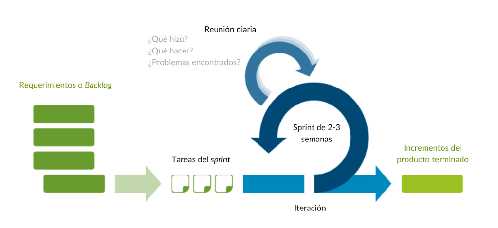

Acerca de
La «metodología» Scrum se puede aplicar a todo tipo de trabajo en equipo, ya que ayuda a administrar y estructurar los proyectos de manera eficaz. Esta metodología para las empresas funciona juntando las cabezas de los miembros de un equipo para administrar el trabajo.
La manera en que funciona Scrum es muy sencilla: una vez que se han creado los equipos se reparten el trabajo en una lista de pequeños entregables con un orden de prioridad; los tiempos de entrega se dividen en ciclos conocidos como sprints, que por lo regular representan una semana.
Todos los integrantes colaboran en función de sus conocimientos individuales y el trabajo se optimiza a través de diferentes reuniones que se tienen al término de cada sprint.
El objetivo principal de Scrum es involucrarse con los clientes, el mercado y la tecnología a través de pequeñas acciones que ayuden a aumentar la productividad.
¿Dónde usarlo?
Como marco Ágil, Scrum es una herramienta de procesos altamente flexible y puede ser “estirada y doblada” para enfrentar requisitos de proyectos de cualquier naturaleza.
Es más adecuada para proyectos a los que se requiere descomponer, basados en las prioridades del negocio, un proyecto muy grande con poca planeación previa, puede descomponerse en pedazos de trabajo manejables.
Por lo tanto, el marco Scrum puede usarse para cualquier proyecto y por cualquier equipo.
características
- Inestabilidad
- Organización autónoma de los equipos
- Fases de desarrollo simultáneas
- Aprendizaje múltiple
- Control sutil, un proceso creativo no debe convertirse en un ambiente caótico y lo lograrás si:
ELa mayoría de los métodos prefieren eliminar la incertidumbre; en cambio, la metodología Scrum señala el lugar a donde se quiere llegar sin establecer un proceso rígido, con lo que da más libertad creativa y fomenta las respuestas más novedosas.
Los autores hacen énfasis en ciertos valores como la autonomía, la trascendencia y la influencia cruzada. Así cada equipo puede autodeterminar la manera en que trabaja y establece sus propias metas, que cada vez son más complejas y llevarán al «gran descubrimiento».
En una forma de trabajo tradicional, hay marcas de tiempo fijas y controles de calidad que reducen el riesgo; mientras que en un enfoque Scrum deberás asumir un margen de riesgo más amplio, ya que la integración y el debate entre varios puntos de vista darán lugar a respuestas extraordinarias.
El aporte de cada miembro puede darse en direcciones que no habían sido previstas, mientras que el grupo debe mantener un interés alto en fortalecer sus conocimientos teóricos y prácticos y así alentar al descubrimiento.
Dispones del talento adecuado.
Esto no solo significa que debes añadir a las personas competentes, sino que deberás contar con los parámetros de evaluación de la personalidad correctos y así equilibrar los caracteres de tu equipo.
Haces que los especialistas recuerden al cliente.
Todos saben que los clientes son el centro de negocio así que logras que los especialistas como los informáticos o ingenieros, volteen a ver lo que ocurre del lado del cliente.
Estimulas a tu equipo
Por medio de recompensas de acuerdo con su desempeño.
Mantienes un ambiente de trabajo abierto
Al mismo tiempo que propicias la participación de todos los involucrados por medio de sus opiniones en cuanto a la idea general de los proyectos y su ejecución.
Gestionas los conflictos
No solo en las etapas críticas sino durante todo el proceso.
Sabes que ocurrirán errores y los toleras
Un proceso novedoso siempre involucrará llegar a caminos sin salida o a resultados por debajo de las expectativas. La clave es que corrijas esos errores a tiempo.
Das un margen de libertad a cada productor
Les informas el problema y les das las herramientas con las que pueden trabajar pero sin establecer un procedimiento específico; así logras que cada grupo se organice de forma autónoma.
Transmisión organizacional del aprendizaje
Tras implementar la metodología Scrum en unas cuantas áreas de tu empresa, verás que toda la organización se contagiará del conocimiento adquirido.
Roles
Dentro del marco de trabajo Scrum existen 4 roles básicos:
- Propietario del producto (Product owner)
- Equipo de desarrollo
- Facilitador de proyectos (Scrum master)
- Interesados (Stakeholders)
Se trata de la persona que determina las prioridades del proyecto y representa a la empresa o los usuarios.
Es el grupo de trabajo que llevará a la realidad el producto que necesita el propietario.
Es la persona que gestiona dinámicas del equipo de trabajo y ayuda a llegar a la consecución del objetivo.
Son aquellos que tienen algún interés en el producto y observan su desarrollo, ya sea como clientes, patrocinadores, directivos de la compañía u otros actores externos
Artefactos
En Scrum, los artefactos son documentos breves que permiten conocer el progreso del proyecto.
Los más relevantes son:
- Visión de producto.
- Pila de producto.
- Meta del sprint.
- Definición de «listo» o «realizado»
- Incremento.
- Gráfico de avance.
Es una descripción breve acerca de las necesidades del propietario del producto, que a su vez funciona para fijar objetivos.
Ayuda a enfocar lo que se hará en cada sprint y puede ser fijada por el equipo de trabajo en compañía con el propietario del producto.
Es la persona que gestiona dinámicas del equipo de trabajo y ayuda a llegar a la consecución del objetivo.
Cuando una etapa del proyecto o el producto son anunciados como «entregados» por parte del equipo, es necesario saber cuáles serán los criterios para su aprobación.
Es el avance de las partes utilizables del producto tras cada sprint.
Es el avance visto desde el proceso de trabajo, que incluye la disminución de la pila de producto. Si una pila comenzó con 10 requerimientos, el proyecto será completado de manera progresiva hasta llegar a cero.
Diagrama del modelo SCRUM
Ahora paso a paso
- Planificación: Product Backlog
- Ejecución: Sprint
- Control: Burn Down
El Product Backlog es la fase en la que se establecen las tareas prioritarias y donde se obtiene información breve y detallada sobre el proyecto que se va a desarrollar.
Dentro del método Scrum, el Sprint es el corazón, un intervalo de tiempo que como máximo tiene una duración de un mes y en donde se produce el desarrollo de un producto que es entregable potencialmente.
El Burn Down es la fase en la que se mide el progreso de un determinado proyecto Scrum. En ella, el Scrum Master será el encargado de actualizar los gráficos cuando se finalice cada uno de los Sprint.
Ventajas
- Permite crear productos listos para salir al mercado en un tiempo menor.
- Ofrece el marco necesario para cambiar de rumbo o de enfoque cuando un proyecto así lo necesita
- Ayuda a comunicarse de manera interna al mantener reuniones diarias que ayudan a retroalimentar el proceso y encontrar los errores.
- Es un medio para evaluar el rendimiento individual y del equipo, así como para propiciar su mejora.
- TFomenta la revisión por parte del cliente y sus necesidades pueden ser gestionadas de manera rápida.
Desventajas
- Si los objetivos no están definidos correctamente, habrá ambigüedad en todo el proceso.
- Si el cliente tiene demandas nuevas en partes avanzadas del proceso, puede estancarse todo el proyecto, por lo que es necesario establecer fechas límite
- Si no hay confianza en el equipo, los controles excesivos disminuirán el rendimiento y desvirtuarán el propósito de este marco de trabajo.
- Debido a que es una forma de trabajo exigente, es necesario contar con miembros de gran experiencia o capacidad; de lo contrario, el proyecto puede fallar.
Podemos afirmar que Scrum es la aproximación de Dirección de Proyectos ideal para proyectos de desarrollo y creación de Software. Si SCRUM llama tu atención, es pertinente mantener ciertos puntos en mente antes de escogerlo como el marco adecuado para un proyecto en particular.
Primero, Scrum no es un método, es un marco, una herramienta de procesos, para la dirección de un proyecto. Segundo, existen unos valores centrales que deben observarse en la teoría y en la práctica, para que Scrum pueda optimizar tus resultados con mejor trabajo de equipo, comunicaciones mejoradas y resultados más rápidos.